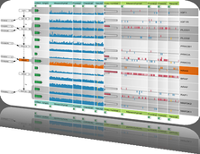

4th Symposium on Biological Data Visualization
11-12 July // Boston, MA @ ISMB
11-12 July // Boston, MA @ ISMB

Information
Presenter Information
We have prepared BioVis slide templates, which are available in light and dark format. Projectors at BioVis2014 support only the normal 4:3 format.
Paper Submission Categories
Three categories of paper are invited BioVis 2014 (details below). Although one main paper type has to be specified during the paper submission process, your manuscript can include elements of more than one of these categories.
- Research papers: novel biological visualization techniques or algorithms, or approaches that significantly extend known biological visualization techniques or algorithms. Relevant previous work must be referenced, and the advantage of the new methods over it should be clearly demonstrated. There should be a discussion of the biological tasks and datasets for which this new method is appropriate, and its limitations.
- Software papers: a blend of visualization algorithms, technical requirements, and design decisions that help biology users deal with the complexity of data management and analysis. The system that is described is both novel and important, and has been implemented. The rationale for significant design decisions is provided, and the system is compared to best-of-breed systems already in use.
- Methodology papers: this category includes Application/Design Studies and Evaluations. Application/Design Studies focus on new or existing visualization techniques to the biology domain, perhaps within a novel system. Such papers typically explore the choices made when applying visualization to a biology area, for example relating the visual encodings and interaction techniques to the requirements of the target task. The results of the Application / Design Study, including insights generated in the biology domain, should be clearly conveyed. Evaluations focus on the usage of biological visualization by human users, typically through an empirical study of biological visualization techniques or systems, or reports of experience with an existing set of biological visualizations. Authors are not necessarily expected to implement the systems used in these studies themselves; the research contribution will be judged on the validity and importance of the experimental results to biology visualization as opposed to the novelty of the systems or techniques under study.
Please see the Call for Participation for further details about topics of interest.
Regardless of the category, all BioVis papers are expected to start with a description of the biological context and motivation provide sufficient biological and visualization background end with a discussion where the biological relevance of the paper is discussed.
Important Dates
Paper submission: March 15, 2014
Preliminary notification: April 17, 2014
Revised manuscript submission: May 10, 2014
Final notification: June 1, 2014
Camera ready copy: June 15, 2014
All deadlines are at 5:00pm Pacific Time (PDT).
Submission
Please format your submission according to the instructions for BMC Bioinformatics manuscripts, however please keep in mind that your submission to BioVis needs to be submitted to PCS (see below) and not BMC. Please use the following two-column, LaTeX template: BioVis_latex.tar.
Word submissions are also acceptable.
Please follow the BioVis instructions whenever they disagree with the BMC instructions (e.g., inline images). For those more familiar with the IEEE VIS templates, at BMC Related work typically belongs to the Background section; or in the discussion section under Results. Algorithms, System Design descriptions etc. typically belong to Methods.
Submission should be at most 10-16 pages long in the two-column format provided above.
BioVis uses the Precision Conference System (PCS) to handle its submission and reviewing process. PCS is available at https://precisionconference.com/~vgtc/. When submitting your manuscript please make sure that you submit it to BioVis 2014 by clicking the appropriate header in the conference system landing page.
Chairs
G. Elisabeta Marai, University of Pittsburgh
Sean O'Donoghue, Garvan Institute/CSIRO, Australia
Contact: papers@biovis.net
BioVis 2014 is an official SIG of ISMB

BioVis 2014 Supporters
Platinum:

Silver:


We also acknowledge the support by BMC.